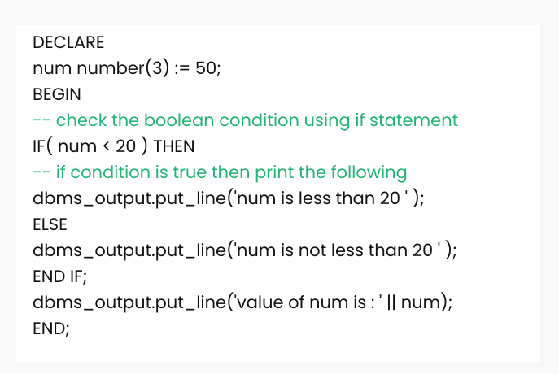

IF in PL/SQL
PL/SQL supports the programming language features like conditional statements and iterative statements. Its programming constructs are similar to how you use in programming languages like Java and C++.
Syntax for IF Statement:
There are different syntaxes for the IF-THEN-ELSE statement.
Syntax: (IF-THEN statement):
IF condition
THEN
Statement: {It is executed when condition is true}
END IF;
This syntax is used when you want to execute statements only when condition is TRUE.
Syntax: (IF-THEN-ELSE statement):
IF condition
THEN
{...statements to execute when condition is TRUE...}
ELSE
{...statements to execute when condition is FALSE...}
END IF;
This syntax is used when you want to execute one set of statements when condition is TRUE or a different set of statements when condition is FALSE.
Syntax: (IF-THEN-ELSIF statement):
IF condition1
THEN
{...statements to execute when condition1 is TRUE...}
ELSIF condition2
THEN
{...statements to execute when condition2 is TRUE...}
END IF;
This syntax is used when you want to execute one set of statements when condition1 is TRUE or a different set of statements when condition2 is TRUE.
Syntax: (IF-THEN-ELSIF-ELSE statement):
IF condition1
THEN
{...statements to execute when condition1 is TRUE...}
ELSIF condition2
THEN
{...statements to execute when condition2 is TRUE...}
ELSE
{...statements to execute when both condition1 and condition2 are FALSE...}
END IF;
For example :
Output :